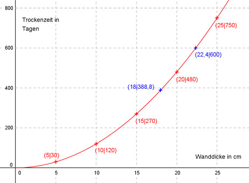
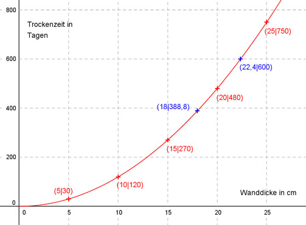

Aufgabe 118
Rohrbrüche bei Leitungswasser sind über die
Hausratversicherung abgesichert. Häufig
müssen danach Trockner für nass gewordenes
Mauerwerk eingesetzt werden. In einer Tabelle hat
der Versicherer übliche Trocknungszeiten für
unterschiedliche Mauerdicken aufgezeichnet.
Mauerdicke in cm 5 10 15 20 25
Trocknungszeit
in Tagen 30 120 270 480 750
(siehe Skizze). Versicherungsmathematiker haben
herausgefunden, dass die Punkte vermutlich auf
dem Graphen einer Funktion der Form f(x) = ax2
liegen.
a) Wie lautet seine Funktionsgleichung?
b) Nach wieviel Tagen ist eine 18 cm dicke Mauer
trocken?
c) Wie dick ist eine Mauer, wenn sie nach 400
Tagen trocken ist?
 a) Die Punktkoordinaten (5/30) in f(x)
eingesetzt:
f(5) = 30 -->
a * 52 = 30 = a * 25 = 30 |:25
a = 1,2
f(x) = 1,2 * x2
Überprüfung für die anderen Punkte:
f(10) = 120 -->
f(10) = 1,2 * 10² = 1,2 * 100 = 120
f(15) = 270 -->
f(15) = 1,2 * 15² = 1,2 * 225 = 270
f(20) = 480 -->
f(20) = 1,2 * 20² = 1,2 * 400 = 480
f(25) = 750 -->
f(25) = 1,2 * 25² = 1,2 * 625 = 750
Alle Punkte liegen auf dem Graphen.
b) f(18) = 1,2 * 182 = 388,8 Tage
c) 600 = 1,2 * x2 |:1,2
x2 = 600/1,2 = 500|√
x1,2 = ± 22,4
x1 = 22,4 cm Dicke
x2 = -22,4 keine Lösung, negative Länge

a) Die Punktkoordinaten (5/30) in f(x)
eingesetzt:
f(5) = 30 -->
a * 52 = 30 = a * 25 = 30 |:25
a = 1,2
f(x) = 1,2 * x2
Überprüfung für die anderen Punkte:
f(10) = 120 -->
f(10) = 1,2 * 10² = 1,2 * 100 = 120
f(15) = 270 -->
f(15) = 1,2 * 15² = 1,2 * 225 = 270
f(20) = 480 -->
f(20) = 1,2 * 20² = 1,2 * 400 = 480
f(25) = 750 -->
f(25) = 1,2 * 25² = 1,2 * 625 = 750
Alle Punkte liegen auf dem Graphen.
b) f(18) = 1,2 * 182 = 388,8 Tage
c) 600 = 1,2 * x2 |:1,2
x2 = 600/1,2 = 500|√
x1,2 = ± 22,4
x1 = 22,4 cm Dicke
x2 = -22,4 keine Lösung, negative Länge
